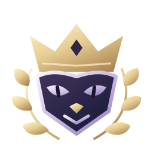
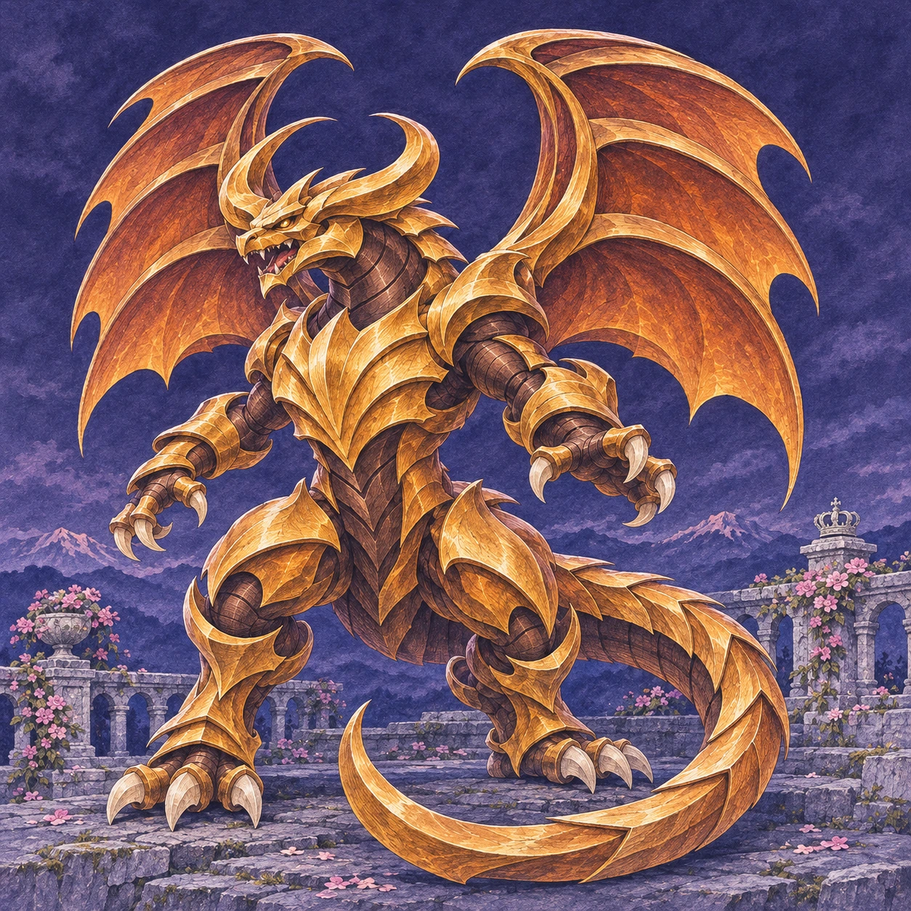
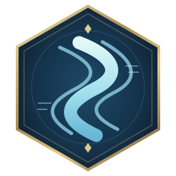
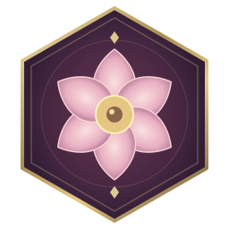

名前とアイコンを選ぶ
プレイヤー名は1〜16文字。7種類のオリジンからアイコンを選びます。あとから設定で変更できます。

BEAST KING遊び方・基本ルール本編を遊ぶBEAST KING / はじめに
魔獣を呼び、奇跡を起こし、仕掛けで流れを変える。
ビーストキングは、集めたカードから36枚のデッキを組んで戦う、無料のブラウザカードゲームです。
PC・スマホ・タブレット対応。スマホは横向きでプレイ。

BEAST KING / 最初の一歩
プレイヤー名は1〜16文字。7種類のオリジンからアイコンを選びます。あとから設定で変更できます。
4種類のうち、選んだ1種類の36枚と100秘宝を受け取ります。残りのスターターは各300秘宝で購入できます。
ソロの練習戦で、召喚・攻撃・ターン終了を体験。覚えたら章の攻略やオンライン対戦へ進みましょう。
手に入れたカードとデッキは保存されます。所持していないスターターが自動配布されることはありません。
BEAST KING / カードの種類
第一弾は1,157枚、第二弾〜第四弾は各1,156枚、第五弾は96枚。五つの弾を自由に組み合わせ、所持カードで編成できます。
出場して戦うカード。アタック型とディフェンス型があります。
特殊デッキに入れる魔獣。「合成」で召喚し、攻撃・守備の両方を使います。
使うとすぐに発動。ダメージ・強化・ドロー・回復・合成召喚を担います。
場に設置する仕掛け。敵の攻撃への反射や、次の自分のターンの支援を行います。
レガリア専用GGRを第一弾に5種、第二弾〜第四弾に各4種追加。セルヴァ8種はユーザー指定の同一原画を使い、各カードのレアリティ演出を維持します。
BEAST KING / パックと秘宝
第一弾1,157枚、第二弾〜第四弾は各1,156枚、第五弾は新テーマ96枚から抽選。レガリアは第二弾、専用17種は4パックに分かれて収録されています。
同じカードの所持上限は3枚。4枚目以降は1枚につき5秘宝へ自動で変わります。
対戦報酬：勝利60秘宝・敗北20秘宝・引き分け30秘宝。降参は0秘宝です。
レアリティ：ノーマル → レア → キラレア → キラキラレア → ギラレア → ギラギラレア。
BK03 / 継承の共鳴
既存の支援1,152枚に、レガリア専用GGR4種を追加。強化・回復・回収を使い分けて、戦術を育てます。
第一弾・第二弾の味方魔獣を強化。減った守備力を回復したり、場の魔獣に応じて結界を張ったりできます。
第一弾・第二弾のコスト4以下の通常魔獣を回収。手札の上限は4枚で、合成魔獣は回収の対象外です。
第一弾と第二弾の魔獣を一緒に出場させると、追加効果を得るカードも登場します。
ショップには混合デッキ4種類の構築例があります。所持カードを必要枚数まで集めると、新しい保存枠に読み込めます。
BK04 / 星界の創世
第四弾だけで成立する新しいデッキ。系統を参照する効果は、第四弾のその系統だけを数えます。
星巡の魔獣を異なるオリジンで並べます。最大3種類までを数え、強化や結界を増幅。
お墓にある残響ミラクルを最大3枚まで数えます。発動中のカード自身は含みません。
ハートポイント200を支払って味方を強化。残り200以下のときは支払えません。
お墓の封機の魔獣1枚を異世界へ送って効果を増幅。使い切る資源の順序が鍵になります。
図鑑の「系統」で絞り込み、ショップの4つの構築例で必要なカードを確認できます。
BK05 / 幻彩の夢界
折紙・玻璃・影絵・彩墨の新カード96枚。第五弾だけで組める構築例を4種類用意しました。
効果が発動するとき、残り手札が1枚以下なら追加効果。使う順番を工夫して、最後の一手を強くします。
結界が200以上あれば200を消費し、追加効果を得ます。守りを残すか、効果へ変えるかを考える戦術です。
効果が発動するとき、自分の魔獣が相手より少なければ追加効果。数的不利を切り返す舞台を作ります。
効果が発動するとき、手札に通常魔獣・ミラクル・ギミックが揃っていれば追加効果。3種類を残す順番が鍵です。
条件はカード使用後に判定し、召喚した魔獣も場の数に含みます。強化は同じ系統の魔獣が対象です。所持カードを集めると、構築例を保存デッキへ読み込めます。
BEAST KING / デッキを組む
通常魔獣・ミラクル・ギミックで、ちょうど32枚。対戦中は山札から手札へ補充します。
合成魔獣だけで、ちょうど4枚。通常の手札には入らず、特殊ゾーンから合成召喚します。
スターターの内訳は通常魔獣16・ミラクル8・ギミック8・合成魔獣4枚。全スターターに「合成」が2枚入っています。
BEAST KING / 対戦の基本
相手のハートポイントを0にすると勝利。回復しても5,000を超えません。
エーテルは毎ターン全回復し、最大10。先攻は1→2→3…、後攻は最初の2ターンを補い2→3→3→4…と増えます。カードの表示コスト分を消費します。
BEAST KING / ターンの流れ
エーテルが回復し、手札が4枚になるまで山札から補充されます。
魔獣を召喚、ミラクルを発動、ギミックを設置。エーテルと場の空きがあれば複数使えます。
魔獣を選び、相手の魔獣かハートポイントを指定。各魔獣は1ターンに1回攻撃できます。
使いたいカードと攻撃が終わったら、ターン終了。相手の行動を待ちます。
通常は召喚した次の自分のターンから攻撃できます。「速攻」を持つ魔獣は、召喚したターンから攻撃できます。
BEAST KING / 攻撃とダメージ
守備力にかかわらず消滅。持ち主のハートポイントに、攻撃した魔獣の攻撃力すべてが入ります。
攻撃力が守備力以下なら無傷。同値も生存します。上回ると消滅し、持ち主は超過分のダメージを受けます。
| 受けるモデル | 魔獣 | 持ち主のダメージ |
|---|---|---|
| アタック型 | 消滅 | 800 |
| ディフェンス型・合成魔獣 | 消滅 | 200 |
通常の戦闘に反撃はありません。魔獣への攻撃で持ち主が受けるダメージは、結界で軽減できません。
BEAST KING / 場の見方
すべてのカードを縦向きに表示します。相手へ向かう方向が前、自分側が後ろです。
| 種類・モデル | 基準枠からの位置 |
|---|---|
| 通常魔獣・アタック型 | 少し前（相手側） |
| 通常魔獣・ディフェンス型 | 少し後ろ（自分側） |
| 合成魔獣 | 中央 |
| ミラクル | 少し左・直前の発動を表示 |
| ギミック | 少し右・2枚まで設置 |
使ったミラクルはお墓へ移動します。直前の発動を表示する枠から再使用はできません。
BEAST KING / 合成召喚
コスト3のミラクル「合成」を使い、特殊デッキの合成魔獣を1体選びます。
自分の手札・出場ゾーン・お墓の魔獣を1枚以上。通常魔獣も合成魔獣も使え、複数の場所から混ぜられます。
素材は異世界へ移り、その対戦では再利用できません。「合成」はお墓へ、合成魔獣は出場ゾーンへ移ります。
素材2枚目以降、1枚につき攻撃力・守備力がそれぞれ+100。素材5枚なら両方+400です。
レガリア専用合成は、素材もレガリアと専用魔獣に限定。各カードの条件に従います。場が4体でも素材で空きを作れ、選択中のキャンセルは無料です。
BEAST KING / 魔獣のキーワード
敵に守護持ちがいるときは、その魔獣を先に攻撃する必要があります。他の魔獣やハートポイントを守ります。
召喚したターンから攻撃できます。召喚後すぐに動いて、相手の場やハートポイントへ圧力をかけられます。
戦闘で相手のハートポイントを実際に減らした分、自分のハートポイントを回復します。守備力へのダメージでは回復しません。
カードごとの効果は、図鑑・手札・出場中の魔獣などの詳細から確認できます。相手の非公開カードは表示されません。
BEAST KING / 結界とカード効果
結界はハートポイントへのダメージを吸収します。ただし、魔獣への攻撃による持ち主のダメージは防ぎません。
反射は攻撃に反応。魔獣サポートは次の自分のターンに発動します。使用したギミックはお墓へ移ります。
ドロー効果も手札4枚で止まり、余分なカードは山札に残ります。山札が空のまま引くと、回数に応じて増える疲労ダメージを受けます。
ミラクル・反射などの効果は守備力を減らすことがあります。守備力が0になると消滅し、回復は最大守備力までです。
BEAST KING / オリジン
山・川・種・草・花・木・王。異なるオリジンを混ぜて編成できます。


「王」はレガリアと専用17種、計18種すべてGGR。全員が通常パックで集め、同じ性能で使えます。ショップでプレミアム構築例を確認できます。
BEAST KING / 4つの対戦
全10章・各2回戦、合計20戦。勝利で次へ進み、クリアした戦いは再戦できます。自由な練習戦はCPU3段階。
32構築の覇王CPUへ、自分の所持デッキで挑戦。相手の採用カードを確認でき、中断・再開にも対応します。
ルームを作り、コードを相手に共有する1対1対戦。ランクのレートは変わりません。
対戦結果をレートへ反映。60秒で相手が見つからない場合はBOT戦となり、相手がBOTであることを表示します。
オンラインは1手番120秒。時間切れは敗北です。タブを閉じたり別画面に移動しても、対戦は一時停止されません。
BEAST KING / 保存と端末連携
名前・アイコン・所持カード・秘宝・デッキ・ソロ進行・戦績・設定を端末とクラウドに保存。レートはサーバーで管理します。
設定の「端末連携と同期」から連携コードを発行。10分以内に別端末で入力します。コードは1回だけ使えます。
JSONバックアップに認証情報やサーバーのレートは含まれません。同じプレイヤーを引き継ぐには端末連携を使います。
端末連携では、連携先の保存データでこの端末を置き換えます。異なるアカウントのデータは合成されません。同期が競合したときは、使うデータを設定で選びます。
BEAST KING / 音と演出
イベント戦は専用BGM。どの対戦もHPがどちらか2,500以下で危機曲へ。両者が上回ると、その対戦の曲に戻ります。
ボタン・カード選択・召喚・攻撃・合成・パック開封に反応します。設定からオン・オフと音量を調整できます。
演出の強さを設定できます。動きを減らすOS設定にも対応。パック開封の演出はスキップできます。
音はブラウザが許可した操作後に再生します。BGMの停止やタブの切替で、オンライン対戦が一時停止することはありません。
BEAST KING / よくある質問
無料で遊べます。スターター1種類と100秘宝で始め、対戦で秘宝を貯めてカードを集められます。
横向きで遊べます。自動固定されないときは、端末の回転ロックを解除して横に向けてください。
読み込み済みのゲームではCPU戦と端末内保存を利用できます。オンライン対戦・同期には通信が必要です。
図鑑やカード詳細で確認できます。対戦中の手札・公開された魔獣・使用済みミラクルにも効果確認があります。
BEAST KING / 王庭へ
スターターを選び、まずは見習いCPUと対戦。
慣れてきたら、自分だけのカードの組み合わせを見つけましょう。